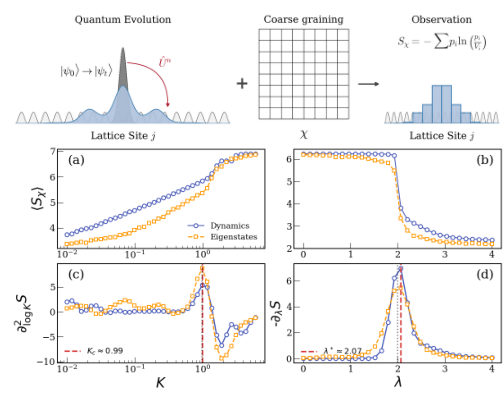
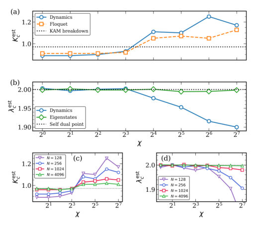

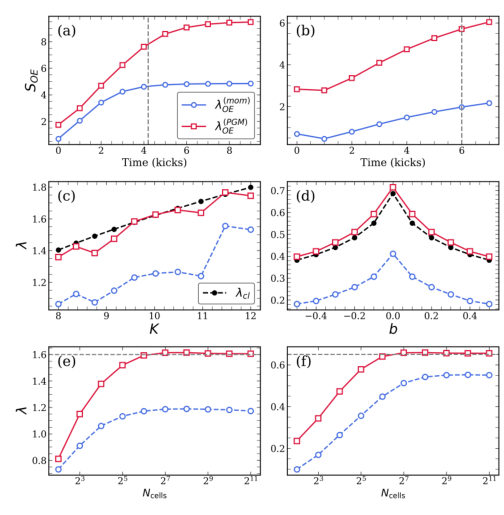
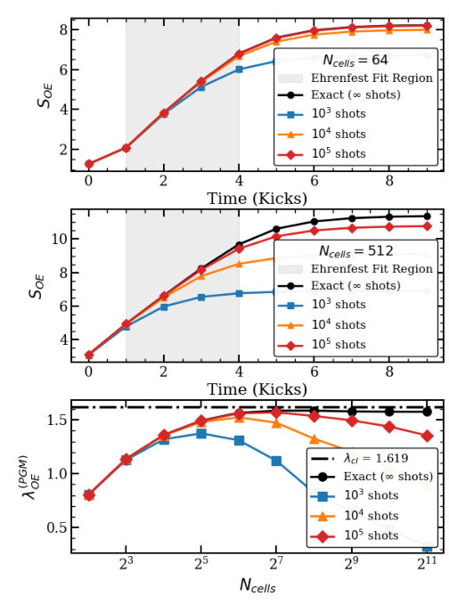
Highlighted author(s): Yuval Gefen
Authors: Parveen Kumar, Igor V. Gornyi, Yuval Gefen
Type: theory · Category: quantum information and computing · PDF: https://arxiv.org/pdf/2605.23232v1
Analysis basis: full PDF text, analyzed in chunks
Topic relevance: 🔥 quantum measurements 4/5 · entanglement & information structure 3/5 · correlated / nonlocal dissipation 2/5 · measurement-induced transitions 2/5 · non-equilibrium dynamics 2/5
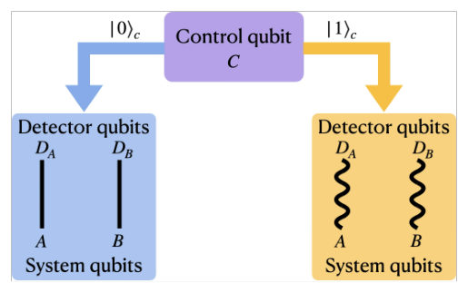
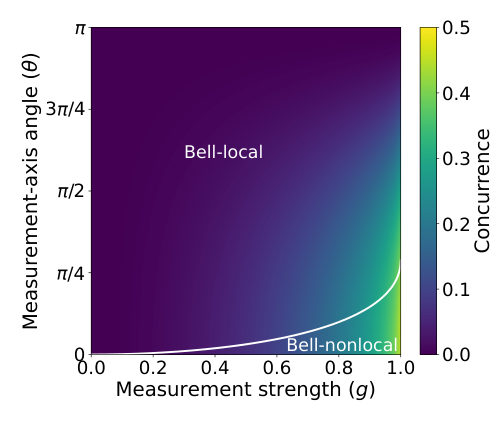
Summary. The paper shows that interference between different sequences of local measurements can create entanglement between two qubits. While the entanglement is limited when measurement outcomes are averaged, the protocol can still produce Bell nonlocality, providing a new way to generate quantum correlations.
Why it may be interesting. This work is highly relevant for open quantum systems and quantum optics as it identifies a new mechanism for generating entanglement through non-unitary, measurement-driven dynamics, extending the concept of quantum interference beyond unitary evolution.
Main problem. Investigating whether two different histories of quantum evolution, composed of local measurements, can interfere with each other to generate quantum correlations.
Main result. The authors demonstrate that interference between measurement-induced histories can generate entanglement and Bell nonlocality, even when the individual measurement branches are non-entangling.
Method. The study uses Kraus operators to describe measurement-induced evolution and employs a protocol involving an auxiliary control qubit to place measurement branches in a coherent superposition.
Model / system. A bipartite system of two qubits (A and B) initially in a separable state, subject to local generalized measurements controlled by an auxiliary qubit (C).
Key observables. Concurrence (to measure entanglement) and the CHSH parameter/Horodecki criterion (to measure Bell nonlocality).
Important parameters / regimes. Measurement strength (g), measurement-axis rotation angle (theta), and the postselection of the control qubit state.
Assumptions / limitations. The proof of the impossibility of maximal entanglement after averaging assumes that the resulting averaged state must be pure to reach maximal entanglement.
Figures summary. Figure 1 provides a schematic of the protocol, illustrating how a control qubit selects between two measurement branches on qubits A and B.
Paper structure. The paper introduces the problem of measurement-history interference, presents a protocol using a control qubit, analyzes entanglement generation in postselected and averaged regimes, provides a microscopic Hamiltonian derivation, and concludes with a mathematical proof regarding the limits of entanglement.
The evolution of a quantum system comprises two fundamental processes--continuous unitary dynamics and stochastic measurement-induced jumps. The latter are often viewed as a source of decoherence. Can two histories of such an evolution, made up of local measurements, interfere with each other? Here, we answer this question in the affirmative. A manifestation of this interference is the generation of entanglement between two parts of the system that are individually coupled to distinct detectors. Specifically, we develop a protocol in which two alternative local measurement processes act on a pair of qubits, and show how interference of histories is generated under coherent control, leading to entanglement. Furthermore, we find that averaging over the detectors' readouts still results in an entangled (albeit not maximally entangled) state. Our results extend the notion of quantum interference beyond unitary evolution to genuinely measurement-driven dynamics, and identify limits on the generation of quantum correlations using interference of measurement histories.
Authors: Jayson G. Cosme, Ludwig Mathey
Type: theory · Category: other · PDF: https://arxiv.org/pdf/2605.23881v1
Analysis basis: full PDF text, analyzed in chunks
Topic relevance: 🔥 driven-dissipative phase transition 5/5 · 🔥 Tavis-Cummings & cavity-many-emitter 4/5 · 🔥 correlated cavity matter 4/5 · 🔥 non-equilibrium dynamics 4/5 · Dicke superradiance 3/5 · analog quantum simulation 3/5 · non-equilibrium universality 3/5 · Keldysh / 2PI / non-Gaussian methods 2/5 · correlated / nonlocal dissipation 2/5 · exotic spin models in light-matter 2/5 · methods for driven-dissipative 2/5
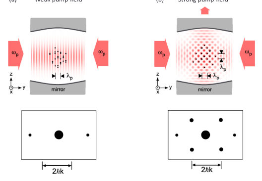
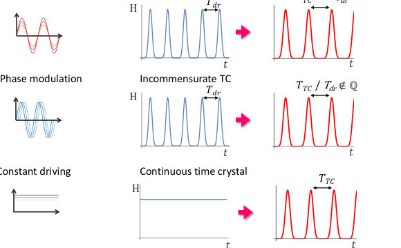
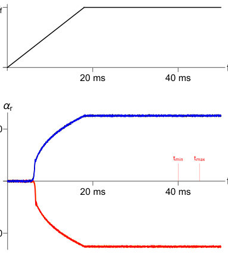
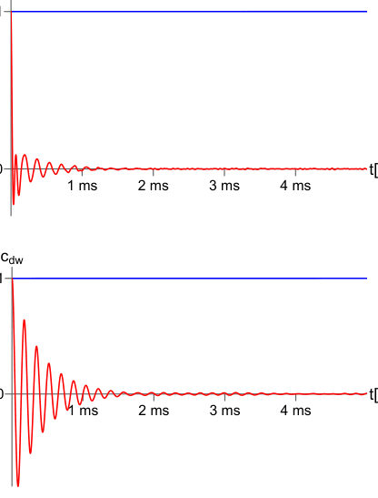
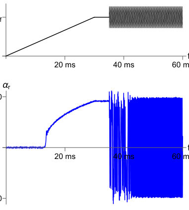
Summary. This review paper explores the emergence of different types of time crystals in a Bose-Einstein Condensate coupled to an optical cavity. It demonstrates how varying the driving protocol (intensity, phase, or constant driving) can induce commensurate, incommensurate, or continuous time crystalline phases. The work highlights the utility of atom-cavity systems as powerful platforms for simulating complex dynamical phenomena.
Why it may be interesting. It provides a blueprint for using cavity-BEC systems as versatile quantum simulators for complex non-equilibrium phenomena and explores the emergence of exotic time-translation symmetry breaking in open quantum systems.
Main problem. The study aims to identify, characterize, and classify three distinct types of time crystalline states (commensurate, incommensurate, and continuous) emerging in driven-dissipative cavity-BEC systems.
Main result. The authors demonstrate that cavity-BEC systems can host various time crystals, ranging from period-doubling states induced by intensity modulation to continuous time crystals occurring under constant driving, and show that long-range order is achieved in the thermodynamic limit.
Method. The study uses semiclassical dynamics via Heisenberg-Langevin equations, numerical integration with the Heun algorithm, and quantum-classical rescaling to investigate the thermodynamic limit.
Model / system. The system consists of a Bose-Einstein Condensate (BEC) inside a high-finesse optical cavity under transverse pumping, which can be mapped onto the open Dicke model using two-mode or three-mode expansions.
Key observables. Cavity mode photon correlation functions (c_ph), checkerboard density wave correlation functions (c_dw), and bond density wave correlation functions (c_bdw).
Important parameters / regimes. Pump intensity, cavity detuning, photon decay rate (kappa), and the atom number (N_a) used for scaling to the thermodynamic limit.
Assumptions / limitations. The system is treated in the dispersive regime where atoms occupy a single internal state, and the dynamics are approximated using a few-mode expansion (two-mode or three-mode).
Figures summary. Figures illustrate the physical regimes of the pump field, the momentum-space distribution of atoms, the driving protocols for different time crystals, trajectories of the cavity field, and parametric representations of correlation functions in the complex plane.
Paper structure. The paper begins by introducing the cavity-BEC platform and the Dicke transition, then progresses through the review of three specific time crystalline states (commensurate, incommensurate, and continuous) using increasing model complexity, and concludes with a summary of the characterization framework and the thermodynamic limit.
The understanding of light-induced dynamical states continues to be a challenging and fruitful pursuit of science. This pursuit is supported by quantum simulation of dynamical phenomena, e.g., in ultracold atom systems. Typically, ultracold atom dynamics are read out destructively, via time-of-flight imaging, limiting a detailed analysis. However, atom-cavity systems provide a real-time readout of the photonic state via photon emission from the cavity, making the system ideally suited for the simulation of dynamical phenomena. Here, we review three distinct time crystalline states, predicted and realized in a cavity-BEC system. We give an example for each of them, based on minimal few-mode models. We characterize the time crystalline states via correlation functions of the cavity mode, and characteristic momentum modes of the condensate. This supports a clear distinction between these time crystals. More generally, the sequence of studies reviewed here, serves as a blueprint for setting up minimal models and their characterization, for dynamical phenomena.
Authors: Yang Gao, Yujia Zhang, Huikai Xu, Pan Shi, Feiyu Li, Yaqing Feng, Weijie Sun, Jiayu Ding, Yang Liu, He Wang, Ruixia Wang, Zhen Yang, Yirong Jin, Haifeng Yu, Fei Yan
Type: experiment · Category: quantum information and computing · PDF: https://arxiv.org/pdf/2605.23385v1
Analysis basis: full PDF text, analyzed in chunks
Topic relevance: 🔥 QC/QI experiment 5/5 · 🔥 correlated / nonlocal dissipation 4/5 · Kondo & dissipative impurity 2/5 · entanglement & information structure 2/5 · non-equilibrium dynamics 2/5
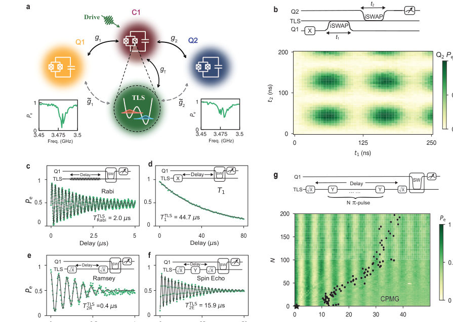
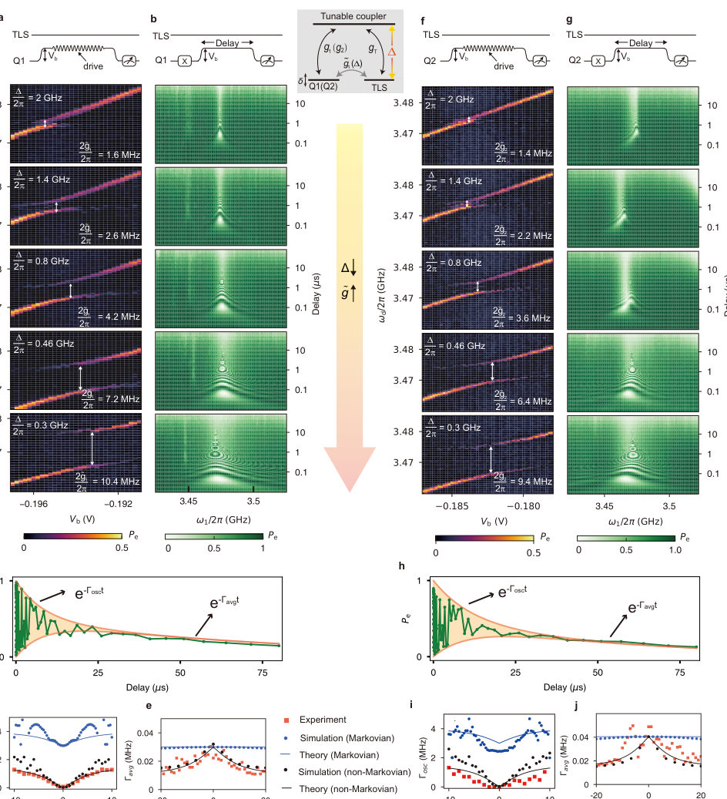
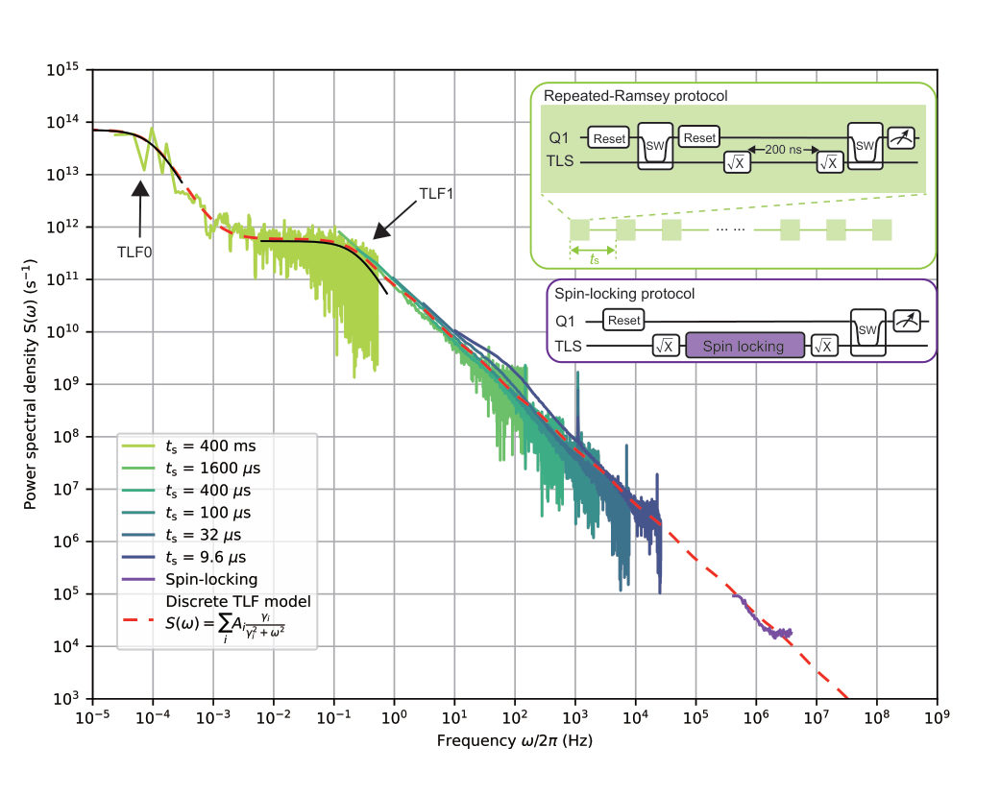
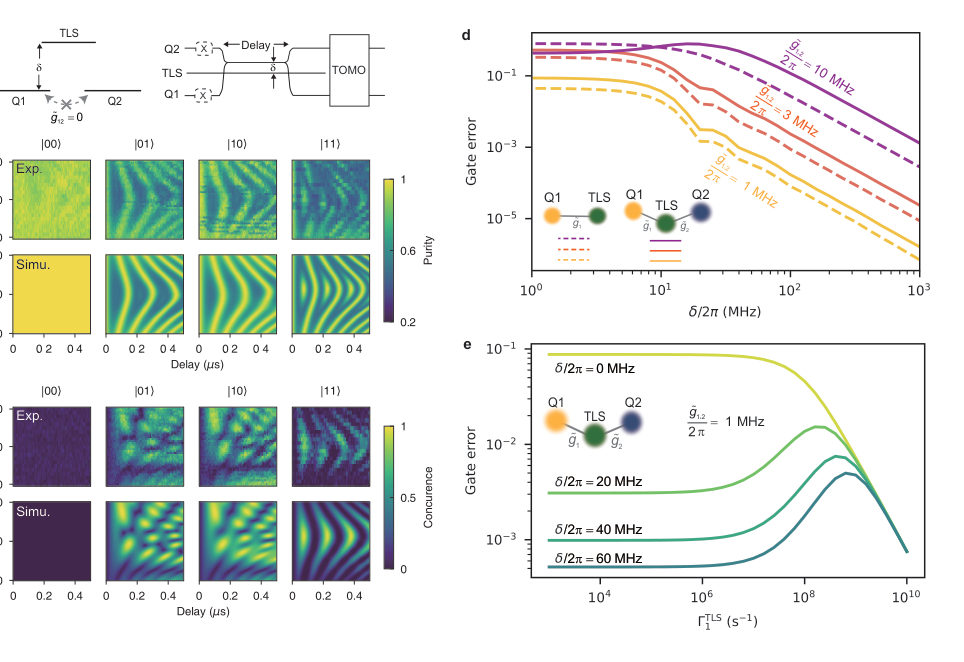
Summary. The study reveals that a single microscopic defect in a superconducting coupler can simultaneously affect multiple distant qubits. By tuning the coupler, the researchers controlled the defect's impact, uncovering non-local correlated errors and non-Markovian dynamics. This finding is crucial for designing scalable quantum computers where defects in coupling elements can act as shared error sources.
Why it may be interesting. This paper is highly relevant for open quantum systems researchers as it provides an experimental realization of non-Markovian, non-local noise and explores the transition between Zeno and anti-Zeno regimes in a multi-qubit architecture.
Main problem. Investigating how a single microscopic two-level system (TLS) embedded in a tunable coupler induces non-local, non-Markovian, and correlated decoherence in spatially separated superconducting qubits.
Main result. The researchers demonstrated a shared TLS that couples to two distant qubits, showing that its impact can be tuned via the coupler frequency, leading to non-Markovian dephasing and correlated qubit dynamics.
Method. The study uses spectroscopy, time-domain iSWAP operations, noise spectroscopy (repeated Ramsey and spin-locking), and quantum process tomography on a 72-qubit superconducting processor.
Model / system. A superconducting quantum processor featuring two frequency-tunable transmon qubits connected via a frequency-tunable transmon coupler, with a single TLS located within the coupler's Josephson junction tunnel barrier.
Key observables. TLS frequency, coupling strengths (g1, g2, gT), coherence times (T1, T2), noise power spectral density (PSD), qubit purity, and concurrence.
Important parameters / regimes. Dispersive regime (large detuning), TLS frequency (~3.48 GHz), noise spectrum spanning 0.1 mHz to 1 MHz, and the Zeno/anti-Zeno regimes of TLS dissipation.
Assumptions / limitations. The TLS is assumed to be located within the coupler's junction barrier and follows a 1/f-like noise profile modeled by independent two-level fluctuators.
Figures summary. Figure 1 shows the experimental setup; Figure 3 displays the TLS dephasing noise power spectral density; Figure 4 illustrates the pulse sequence for measuring concurrence and purity.
Paper structure. The paper introduces the problem of TLS-induced decoherence, describes the experimental platform and TLS identification, details the measurement of non-local and tunable coupling, presents noise spectroscopy results, and concludes with implications for scalable architecture design.
Microscopic two-level systems (TLS) -- ubiquitous atomic-scale defects in solid-state quantum devices -- are a dominant source of qubit decoherence, yet their role is often considered local and short-memoried. Here, we report the observation of a coherent TLS that couples simultaneously to two spatially distant superconducting qubits. The TLS is identified to reside within the tunable coupler linking the qubits, enabling controllability of the TLS-qubit coupling strength via coupler frequency -- a capability absent in earlier studies. This tunability allows us to systematically probe how TLS distorts qubit dynamics, revisiting the decoherence model in the presence of non-Markovian TLS dephasing noise. This is corroborated by the reconstructed $1/f$ noise spectrum of TLS frequency fluctuation spanning more than ten orders of magnitude (0.1\,mHz -- 1\,MHz) that reveals discrete fluctuator signatures. Quantum process tomography further unveils TLS-induced correlated qubit dynamics, highlighting the long-lived TLS as an effective source of non-Markovianity. Our findings expose a previously overlooked interaction mechanism in scalable quantum architectures: defects embedded in coupling elements can simultaneously affect multiple qubits with variable impact. Beyond immediate implications for system characterization and calibration, this situation provides a powerful testbed for studying defect-driven quantum dynamics, refining error suppression strategies, and advancing architecture design for scalable quantum technologies.
Authors: Aron Kerschbaumer, Jean-Yves Desaules, Maksym Serbyn
Type: theory · Category: statistical mechanics · PDF: https://arxiv.org/pdf/2605.23873v1
Analysis basis: full PDF text, analyzed in chunks
Topic relevance: 🔥 scars & prethermalization 5/5 · 🔥 non-equilibrium dynamics 4/5 · entanglement & information structure 3/5
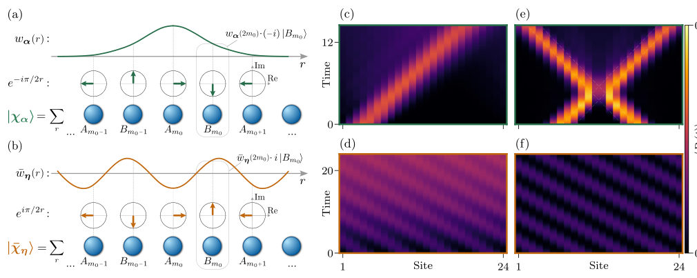
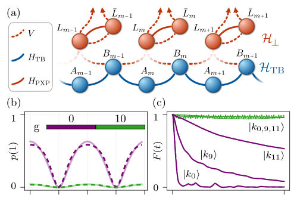
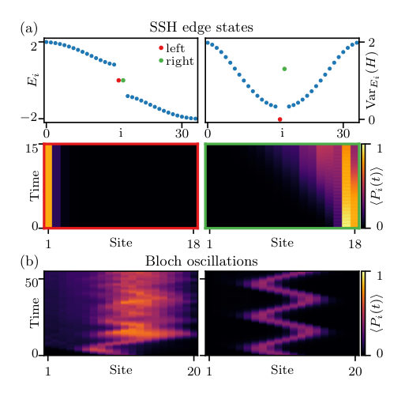
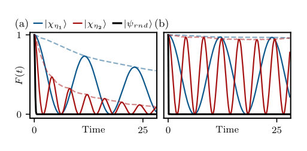
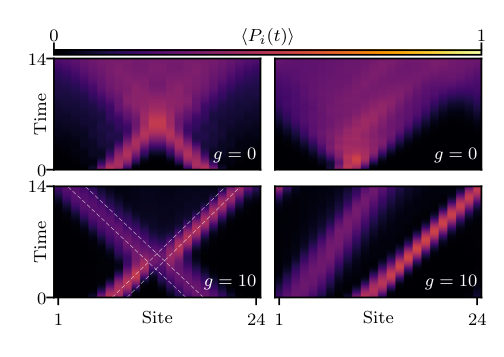
Summary. This paper introduces a way to find and stabilize non-thermal phenomena like quantum scars and chiral quasiparticles within chaotic spin chains using interference-protected subspaces. By adding a specific perturbation, the authors show that leakage into the chaotic bulk can be suppressed, allowing for persistent coherent dynamics. This work connects several disparate concepts like quantum cages and many-body scars into a single unified theory.
Why it may be interesting. It provides a new theoretical framework for engineering and stabilizing non-thermal, coherent dynamics (like quantum scars and topological modes) within otherwise chaotic many-body environments, which is highly relevant for controlling many-body dynamics.
Main problem. Understanding the mechanism behind weak ergodicity breaking and how certain non-thermal states, such as quantum scars and chiral quasiparticles, can maintain coherence and evade thermalization in chaotic many-body systems.
Main result. The authors identify an interference-protected subspace in a family of chaotic spin chains where non-thermal phenomena are stabilized by destructive interference and rapid oscillations, providing a unified framework for scars, quantum cages, and topological edge modes.
Method. The study employs a quantitative leakage theory based on a Dyson expansion in the interaction picture, a tight-binding mapping of the protected subspace, and numerical simulations of real-space dynamics and fidelity.
Model / system. A family of local, chaotic spin-1/2 chains based on an inversion-symmetric version of the kinetically constrained East model, specifically a perturbed Hamiltonian H_PX with a stabilization term g*H_PXP.
Key observables. Real-space dynamics, fidelity revivals, leakage rate, entanglement entropy, local expectation values, and level-spacing statistics.
Important parameters / regimes. The stabilization strength g, momentum k, modulation frequency q, and blockade range alpha.
Assumptions / limitations. The analysis assumes the existence of a structured tight-binding subspace and uses a first-order Dyson expansion for the leakage theory.
Figures summary. Figure 1 shows wavepacket and scarred state constructions and chiral dynamics; Figure 2 illustrates leakage suppression mechanisms; Figure 4 compares quasiparticle decay at g=0 vs. stability at g=10; Figure 5 shows fidelity revivals; Figure 6 relates to the parent Hamiltonian construction.
Paper structure. The paper introduces the model and the concept of protected subspaces, develops a quantitative leakage theory, demonstrates various non-thermal phenomena (scars, chiral particles, edge modes), provides a stabilization mechanism via a perturbation term, and concludes by connecting these findings to broader frameworks like parent Hamiltonians.
Generic quantum many-body systems are expected to thermalize, scrambling initial coherence while local observables relax to equilibrium values. Weak ergodicity breaking, often associated with quantum many-body scarring of homogeneous states, provides rare exceptions with long-lived coherence. We introduce a family of local spin-1/2 chains with a structured subspace that hosts a much broader range of nonthermal phenomena, such as scars, chirally propagating quasiparticles or approximate topological edge modes. These nonthermal phenomena happening at high energy densities can be understood via structured subspaces that are protected by destructive interference. We develop a quantitative leakage theory predicting which states retain coherence and suggest ways to improve the stability by inducing fast oscillations in the complement subspace. Our framework connects asymptotic scars, quantum cages, and parent-Hamiltonian constructions, and shows that weak ergodicity breaking in chaotic systems extends well beyond revivals of homogeneous initial states.
Authors: Debabrata Mondal, Sohan Pati, S. Sinha
Type: theory · Category: other · PDF: https://arxiv.org/pdf/2605.22953v1
Analysis basis: full PDF text, analyzed in chunks
Topic relevance: 🔥 Tavis-Cummings & cavity-many-emitter 4/5 · 🔥 driven-dissipative phase transition 4/5 · 🔥 scars & prethermalization 4/5 · Dicke superradiance 3/5 · correlated / nonlocal dissipation 3/5 · correlated cavity matter 3/5 · methods for driven-dissipative 3/5 · non-equilibrium dynamics 3/5 · quantum measurements 2/5
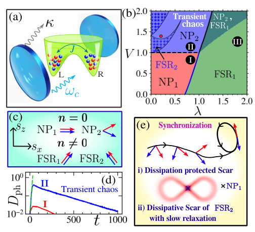
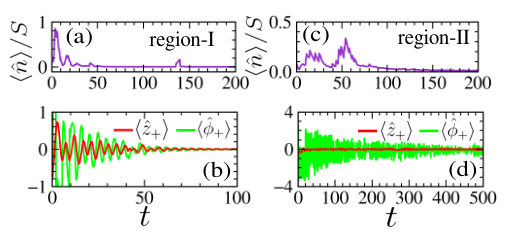
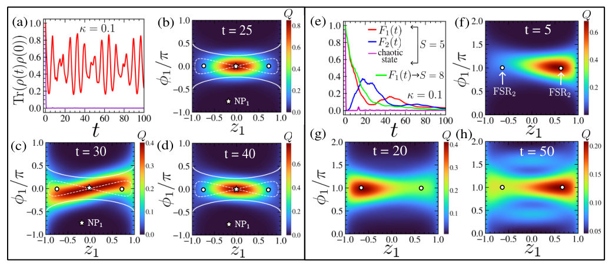
Summary. This paper explores the dynamics of an open Dicke model where photon loss drives the system toward synchronization and regulates transient chaos. It identifies two distinct classes of dissipative quantum scars, one of which is protected from decay. The findings are relevant for controlling many-body states in cavity QED and Bose-Josephson junction platforms.
Why it may be interesting. It provides deep insights into how engineered dissipation can be used to control many-body dynamics, specifically by stabilizing synchronization and regulating chaos in open quantum systems.
Main problem. Investigating how dissipation and photon loss influence non-equilibrium phenomena, specifically the stability of many-body quantum scars and the transition from chaos to synchronization.
Main result. The study identifies two types of dissipative quantum scarring: a protected type with persistent oscillations and a dissipative type with slow decay, while showing that photon loss induces spontaneous synchronization and suppresses transient chaos.
Method. The authors use a combination of classical stability analysis of equations of motion and quantum simulations via the stochastic wave-function (quantum trajectories) method within a Lindblad master equation framework.
Model / system. An open coupled-top Dicke model (OCTD) consisting of two interacting large spins coupled to a lossy cavity mode, which can be physically realized by a two-species Bose-Josephson junction in a cavity.
Key observables. Photon number, spin components, population imbalance, relative phase, survival probability, Husimi distributions, and a photon field decorrelator.
Important parameters / regimes. Spin magnitude (S), photon frequency (omega_c), photon loss rate (kappa), spin-cavity coupling (lambda), spin interaction (V), and tunneling (J).
Assumptions / limitations. The use of the large-spin limit (S to infinity) for classical dynamics and the decoupling approximation for deriving classical equations of motion.
Figures summary. Fig 1 shows the physical schematic and phase diagram; Fig 2 illustrates the decay of photon number and synchronization dynamics; Fig 3 demonstrates the two types of quantum scarring through survival probability and Husimi distributions.
Paper structure. The paper introduces the OCTD model and its physical realization, performs a classical stability and phase analysis, presents quantum simulation results regarding synchronization and chaos regulation, details the identification of two distinct scarring phenomena, and concludes with the connection to quantum tunneling.
We present a variant of the Dicke model, termed as the open coupled-top Dicke model, which enables the exploration of rich non-equilibrium phenomena, particularly the fate of quantum scars in an open environment. This model can effectively be realized by coupling a two-species Bose-Josephson junction to a lossy cavity. Photon loss induces spontaneous synchronization via projection onto a dissipation-free subspace, along with transient chaos followed by restoration of synchronization and coherence. We identify two distinct scarring phenomena in the presence of dissipation. One remains protected, exhibiting persistent revivals, while the scar associated with the superradiant phase displays a dissipation-induced slow decay of the survival probability. Remarkably, for sufficiently small spin magnitude, the chaos-assisted macroscopic quantum tunneling is linked to the latter type of scarring. The results can be readily tested in ongoing cavity QED experiments and have broader applicability in other platforms.
Authors: M. E. S. Beck, S. S. Seidov, S. I. Muhkin
Type: theory · Category: other · PDF: https://arxiv.org/pdf/2605.23322v1
Analysis basis: full PDF text, analyzed in chunks
Topic relevance: 🔥 Dicke superradiance 4/5 · 🔥 Tavis-Cummings & cavity-many-emitter 4/5 · correlated / nonlocal dissipation 3/5 · correlated cavity matter 3/5 · driven-dissipative phase transition 3/5 · methods for driven-dissipative 3/5 · non-equilibrium dynamics 3/5 · Keldysh / 2PI / non-Gaussian methods 2/5
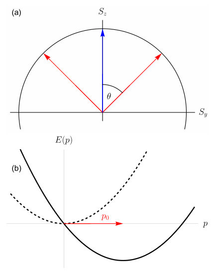
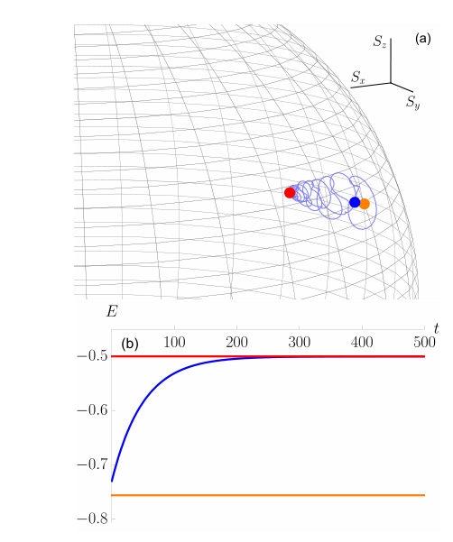
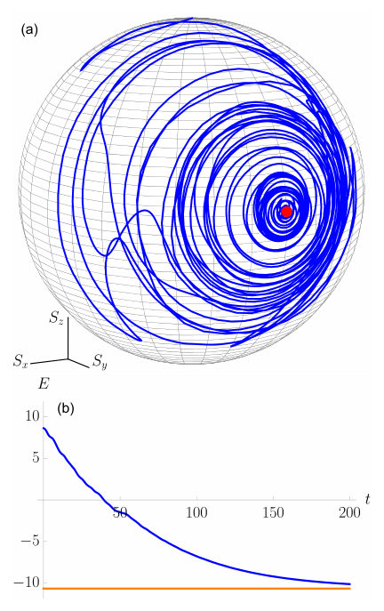
Summary. The paper shows that standard Lindblad equations fail to describe relaxation in the Dicke model's superradiant phase because they do not account for the shift in the energy minimum. By deriving a 'dressed' master equation, the authors prove that the system can relax to its ground state and that a quantum viscosity persists even at absolute zero temperature.
Why it may be interesting. This paper is highly relevant for researchers in open quantum systems and cavity QED as it addresses a fundamental correction to the master equation formalism in the ultra-strong coupling regime and reveals a temperature-independent mechanism for quantum viscosity.
Main problem. The failure of standard 'bare' Lindblad master equations to allow the Extended Dicke model to relax to its true ground state in the superradiant phase, and the origin of quantum viscosity in this regime.
Main result. The authors demonstrate that a 'dressed' Lindblad equation, using condensate-shifted operators, is required for proper relaxation to the energy minimum, and show that effective quantum viscosity persists even at zero temperature due to virtual excitations of the thermal bath.
Method. Quantum mechanical derivation of the Lindblad equation via coupling the system to a Caldeira-Leggett thermal bath, utilizing Holstein-Primakoff and Bogolyubov transformations, and applying a semi-classical approximation.
Model / system. The Extended Dicke Model (EDM) describing the interaction between an electromagnetic field and an ensemble of N two-level systems, coupled to a Caldeira-Leggett thermal bath of harmonic oscillators.
Key observables. Effective viscosity, energy dynamics, spin coordinates (Sx, Sy, Sz), and phase space coordinates (q, p).
Important parameters / regimes. Ultra-strong coupling (USC) regime, superradiant phase, zero-temperature limit (T -> 0), coupling strength g, and Zeeman energy E_Z.
Assumptions / limitations. Large spin limit (S >> 1), proximity to the energy minimum, neglect of tunneling, and the use of the Rotating Wave Approximation (RWA) to neglect rapidly oscillating inter-ladder transitions.
Figures summary. Figure 1b shows the rotation of energy minima and momentum shift; Figure 3a shows semi-classical spin dynamics aligning with the energy minimum; Figure 3b shows energy dynamics.
Paper structure. The paper first identifies the failure of bare dissipators in the superradiant phase, then provides a formal derivation of a dressed Lindblad equation using a thermal bath, analyzes the resulting quantum viscosity mechanism, and concludes with an appendix mapping the transformed operators.
Quantum dissipation is studied in the superradiant phase of the Extended Dicke model. It is demonstrated analytically by quantum mechanical derivation of the Lindblad equation for the Dicke model in the superradiant state coupled to Caldeira-Leggett thermal bath, that the effective viscosity appearing in the semiclassical equations of motion of polaritonic condensate survives in the zero temperature limit T -> 0. The nonzero contribution to viscosity contains prefactor nB (ω, T ) + 1 with the Bose-Einstein function nB of harmonic oscillators in the thermal bath, indicating that virtual excitations of harmonic oscillators in the thermal bath coupled to the polaritons of Dicke model give rise to effective viscosity in the T -> 0 limit. Besides, it is demonstrated analytically, that correct expression for Lindbladian in the superradiant phase should be built using condensate-shifted creation and annihilation operators of the photons and pseudospin operators in Holstein-Primakoff representation of the coupled to photons two-level systems in order the system could relax to its minimum energy in T -> 0 limit due to thermal bath provided effective viscosity.
Authors: J. Bharathi Kannan, Sreeram PG, M. S. Santhanam
Type: theory · Category: statistical mechanics · PDF: https://arxiv.org/pdf/2605.23585v1
Analysis basis: full PDF text, analyzed in chunks
Topic relevance: 🔥 entanglement & information structure 4/5 · 🔥 non-equilibrium dynamics 4/5 · 🔥 quantum measurements 4/5 · non-equilibrium universality 3/5 · analog quantum simulation 2/5 · driven-dissipative phase transition 2/5 · measurement-induced transitions 2/5 · scars & prethermalization 2/5




Summary. The paper introduces 'Observational Entropy' as a scalable tool to detect quantum phase transitions and quantify chaos. By using coarse-grained measurements, the authors show that one can identify localization and the destruction of KAM tori while accurately recovering classical Lyapunov exponents. This framework is particularly useful for characterizing complex quantum systems where full state tomography is impossible.
Why it may be interesting. It provides a practical, information-theoretic bridge between classical chaos and quantum dynamics, offering an experimentally feasible way to probe complex dynamics in many-body systems and quantum simulators without full state reconstruction.
Main problem. How to accurately characterize quantum chaos, ergodicity breaking, and localization transitions using scalable, finite-resolution measurements instead of full state tomography.
Main result. Observational entropy (OE) provides a unified diagnostic where its derivatives identify transition types (KAM destruction vs. localization) and its growth rate reproduces classical Lyapunov exponents.
Method. Coarse-graining probability distributions into macrostates and using a Pretty Good Measurement (PGM) correction to the Husimi phase-space distribution.
Model / system. The study utilizes the Aubry-Andre model for localization transitions and the Standard and Singular Kicked Rotors for studying the transition from integrable to chaotic dynamics.
Key observables. Observational Entropy (OE), entropy derivatives (susceptibility and curvature), and the observable Lyapunov exponent.
Important parameters / regimes. Coarse-graining resolution (chi), kick strength (K), non-analyticity exponent (alpha), Ehrenfest time, and measurement shot noise.
Assumptions / limitations. The accuracy of the method is limited by an intrinsic resolution bound and the statistical uncertainty arising from finite measurement shots.
Figures summary. Fig 1 shows the coarse-graining protocol and OE derivatives; Fig 2 demonstrates the accuracy of critical point estimates and finite-size scaling; Fig 3 compares momentum-space vs. phase-space OE growth and Lyapunov exponent extraction; Fig 4 illustrates the trade-off between resolution and shot noise.
Paper structure. The paper introduces the Observational Entropy framework, applies it to the Aubry-Andre and Kicked Rotor models to identify phase transitions, demonstrates its ability to quantify classical chaos via phase-space measurements, and analyzes the impact of finite resolution and shot noise.
Coarse-grained measurements offer a scalable alternative to full state tomography for characterizing complex quantum dynamics. We show that observational entropy (OE), an information-theoretic entropy defined directly from finite-resolution measurement outcomes, provides a unified and experimentally accessible framework for quantifying chaos and probing criticality. From probing the insulator-metal crossover in the Aubry-Andre model to tracking the gradual destruction of Kolmogorov-Arnold-Moser tori in the Kicked Rotor, derivatives of OE provide an accurate and unified diagnostic of probing these transitions. In both cases, the critical points extracted from dynamical evolution and eigenstate analyses converge to the exact theoretical values once the observational resolution exceeds a finite threshold. In the chaotic limit, OE exhibits a linear behavior within the Ehrenfest time regime, and its slope defines an observable Lyapunov exponent. Using a Pretty Good Measurement correction to the Husimi phase-space distribution, this entropy-production rate quantitatively reproduces the classical Lyapunov exponent in both the standard and singular kicked rotors. Our results establish OE as a compact information-theoretic bridge between classical instability, quantum criticality, and realistic finite-resolution measurements.
Authors: Taira Giordani, Gennaro Zanfardino, Luca Leuzzi, Enrico Bonfissuto, Eugenio Caruccio, Gabriele Gasbarri, Mattia Bossi, Abhiram Rajan, Riccardo Albiero, Francesco Ceccarelli, Nicolò Spagnolo, Raffaele Santagati, Stefano Paesani, Marco Leonetti, Roberto Osellame, Giorgio Parisi, Giancarlo Ruocco, Fabrizio Illuminati, Fabio Sciarrino
Type: experiment · Category: disordered systems and neural networks · PDF: https://arxiv.org/pdf/2605.22922v1
Analysis basis: full PDF text, analyzed in chunks
Topic relevance: 🔥 QC/QI experiment 4/5 · 🔥 analog quantum simulation 4/5 · 🔥 exotic spin models in light-matter 4/5 · 🔥 quantum optics experiment 4/5 · driven-dissipative phase transition 2/5 · interference shaping light 2/5 · non-equilibrium dynamics 2/5
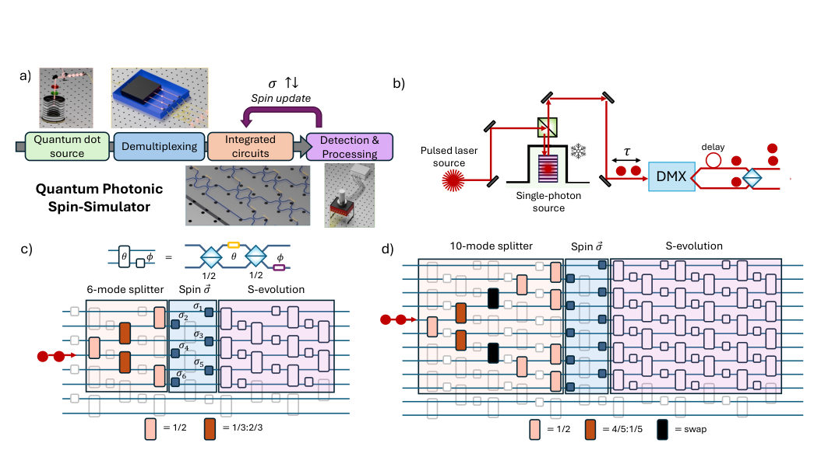
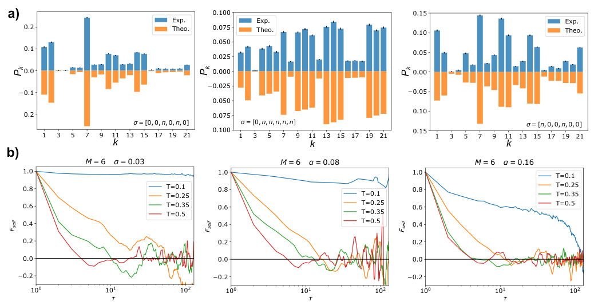
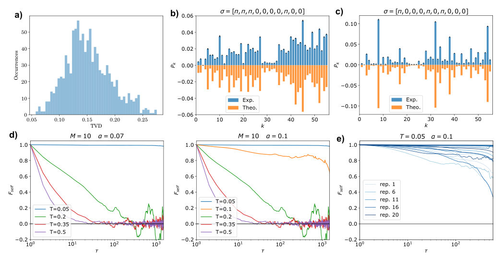
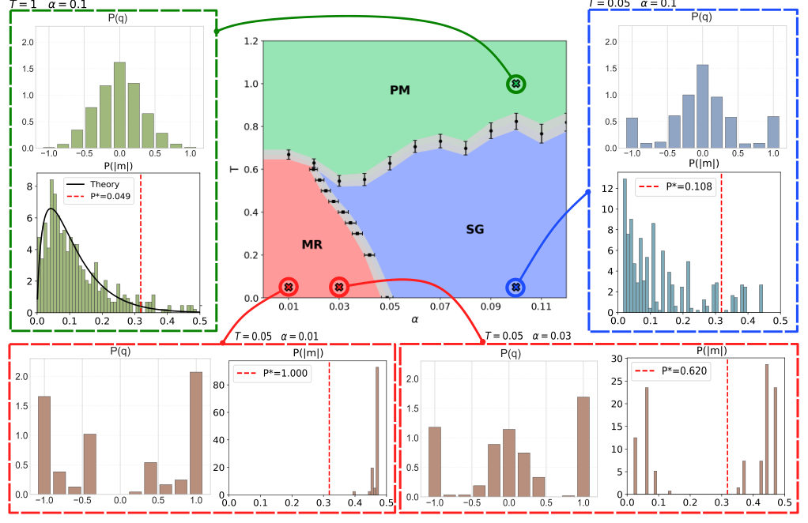
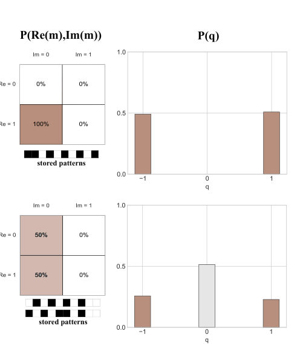
Summary. This paper presents an experimental photonic quantum simulator that emulates a generalized Hopfield neural network. By using two-photon interference, the platform successfully observes the transition between memory retrieval, spin-glass, and paramagnetic phases. This demonstrates the potential of photonic technologies to solve complex optimization and many-body simulation problems.
Why it may be interesting. This work demonstrates a powerful application of quantum optics and photonics for simulating complex many-body dynamics and phase transitions in disordered systems, bridging the gap between quantum hardware and statistical mechanics.
Main problem. Simulating the complex, multi-synaptic interactions of large-scale neural networks and spin glasses is computationally expensive on classical hardware due to super-linear scaling.
Main result. The researchers experimentally demonstrated a photonic quantum simulator capable of identifying three distinct phases: memory retrieval, spin-glass 'black-out', and paramagnetic phases.
Method. The study uses a programmable photonic processor to implement Metropolis Monte Carlo sampling, where two-photon interference is used to evaluate the energy of spin configurations.
Model / system. A programmable quantum photonic simulator (QOLOSSUS) using 8- and 12-mode integrated circuits, implementing a $p=4$ body Hopfield Hamiltonian via two-photon processes.
Key observables. Memory overlap (bilinear magnetization $|m|$), spin-spin overlap between replicas ($q$), and spin-spin autocorrelation function.
Important parameters / regimes. Temperature ($T$), storage capacity ($\alpha$), and number of spins/modes ($M$).
Assumptions / limitations. The current implementation is limited to small-scale architectures (6- and 10-spin systems).
Figures summary. Figure 1 shows the simulator setup and the Metropolis optimization loop; Figure 2 details the experimental apparatus and photon-pair generation; Figure 5 presents the reconstructed $(\alpha, T)$ phase diagram; Figure 6 shows magnetization and overlap distributions for the emulated Ising-like model.
Paper structure. The paper introduces the computational bottleneck of classical neural network simulation, describes the photonic hardware and the mathematical mapping of the Hopfield model to photonics, details the experimental validation of the setup, presents the characterization of the phase diagram, and concludes with future scaling directions.
Models of interacting complex systems provide the fundamental statistical physics reference frame for the study and the understanding of associative memories, machine learning, and the dynamics of neural networks. On the other hand, simulating complex multi-synaptic interactions on a classical hardware is computationally demanding due to the super-linear scaling of the system complexity. Photonic quantum technologies provide a promising solution to these limitations by leveraging on their inherent speed and parallel processing ability in order to simulate complex networks. Recently, a connection between multiphoton processes and generalized $p$-body Hopfield models has been theoretically established. Here, we design and demonstrate an experimental platform that exploits single photons distributed across a set of optical modes, in which controlled arrays of binary phase shifters act as Ising-like neurons. We focus specifically on a fully connected Hopfield Hamiltonian with four-body local interaction terms, realized via two-photon processes. Through quantum simulations on programmable photonic processors, the study identifies three distinct regimes: a memory retrieval phase, a spin-glass memory "black-out" phase, and a paramagnetic phase. Experimental results confirm successful memory retrieval at low storage capacities and temperatures, where the system consistently relaxes to fixed points with high memory overlap, effectively reconstructing the stored patterns. Future research will extend the platform design to investigate networks with local or dilute interactions, while advances in the realization of scalable photonic circuits will enable architectures that encompass very large numbers of interacting spins.
Authors: Carlos Argüelles, Gabriela Barenboim, Gonzalo Herrera, Tanvi Krishnan, Héctor Sanchis
Type: theory · Category: statistical mechanics · PDF: https://arxiv.org/pdf/2605.22919v1
Analysis basis: full PDF text, analyzed in chunks
Topic relevance: 🔥 Keldysh / 2PI / non-Gaussian methods 4/5 · 🔥 non-equilibrium universality 4/5 · driven-dissipative phase transition 3/5 · methods for driven-dissipative 3/5 · non-equilibrium dynamics 3/5 · Kondo & dissipative impurity 2/5 · entanglement & information structure 2/5
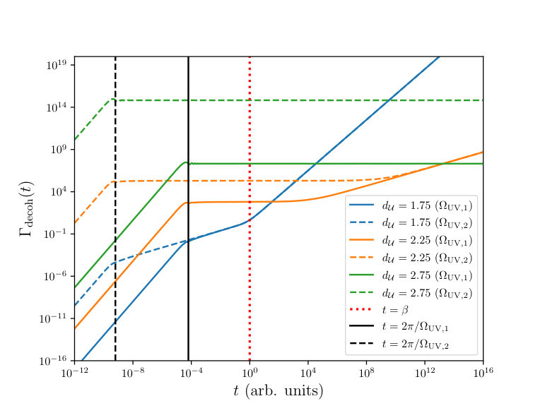
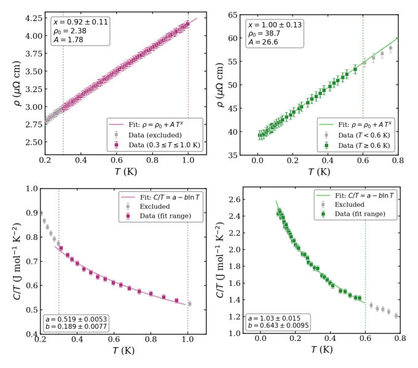
Summary. This paper establishes that all scale-invariant quantum environments are mathematically equivalent to 'unparticle' baths. It provides a generalized non-Markovian master equation that predicts new phase transitions in decoherence and thermalization across condensed matter, cosmology, and particle physics.
Why it may be interesting. It provides a universal, unified language for understanding non-Markovian dynamics across vastly different scales, from superconducting qubits and trapped ions to the early universe and high-energy astrophysics, while predicting new regimes of coherence protection.
Main problem. Developing a complete theoretical framework for open quantum systems coupled to scale-invariant environments and proving that such environments are universally described by unparticle baths.
Main result. The authors prove a uniqueness theorem establishing that scale-invariant, Lorentz-invariant, and unitary environments are uniquely described by unparticle baths, and they identify a rich phase structure including thermalization and decoherence transitions.
Method. The work uses the Kallen-Lehmann spectral representation, path integral formalism (influence functionals), and conformal bootstrap to derive non-Markovian master equations and scaling laws.
Model / system. The framework applies to a system coupled to an unparticle bath characterized by a scaling dimension d_U, with specific realizations in the quantum Ising model, inflationary cosmology (de Sitter space), and high-energy astrophysical neutrinos.
Key observables. Decoherence rate (Gamma_decoh), spectral density J(omega), noise and dissipation kernels, resistivity, and specific heat scaling.
Important parameters / regimes. Unparticle scaling dimension (d_U), scaling dimension (Delta), temperature (T), and the spectral exponent (s).
Assumptions / limitations. Local coupling, Lorentz invariance, scale invariance, and unitarity.
Figures summary. The paper includes tables summarizing scaling exponents and dynamical regimes, and figures illustrating the relationship between unparticle dimensions and physical observables.
Paper structure. The paper begins with a proof of the uniqueness theorem, develops the mathematical formalism for non-Markovian dynamics, compares the framework to Caldeira-Leggett and Lindblad models, and concludes with applications to the Ising model, cosmology, and neutrino physics.
We develop a complete theoretical framework for open quantum systems coupled to scale-invariant environments. We show that such environments are universally described by unparticle baths characterized by a single scaling dimension $d_{\mathcal{U}}$. This work provides the proof of the uniqueness theorem, the formalism of the resulting non-Markovian dynamics, and applications to several physical systems. From the uniqueness theorem, we derive the non-Markovian memory kernels, the exact noise kernel including vacuum and thermal contributions, and a fractional generalization of the Caldeira-Leggett master equation for arbitrary $d_{\mathcal{U}}$. The scaling dimension governs a rich phase structure, including a thermalization transition at $d_{\mathcal{U}}=3/2$, the Ohmic boundary at $d_{\mathcal{U}}=2$, and a decoherence transition at $d_{\mathcal{U}}=5/2$ in the thermal regime, beyond which long-time quantum coherence is protected. Three realizations are studied. For the quantum Ising model at criticality, coupling to the energy operator in $(1+1)$ dimensions gives $d_{\mathcal{U}}=3/2$, producing $1/f$ noise, while the $(2+1)$D case yields $d_{\mathcal{U}}\approx1.413$ from the conformal bootstrap. In inflationary cosmology, massless scalar and graviton baths in de Sitter spacetime give $d_{\mathcal{U}}=2$, predicting linear decoherence growth consistent with the quantum-to-classical transition. For high-energy astrophysical neutrinos, the decoherence rate $Γ_{\mathrm{decoh}}\propto \mathcal{B}(E,T_{\mathcal{U}})L^{5-2d_{\mathcal{U}}}$ provides an observable signature of the scaling dimension. We also compare the framework with Caldeira-Leggett and Lindblad approaches, analyze the validity regimes, and discuss experimental implications for trapped-ion simulators, neutrino telescopes, and superconducting qubits.
Authors: Francesco Musso, Vittorio Vitale, Sara Murciano
Type: theory · Category: numerical methods · PDF: https://arxiv.org/pdf/2605.22917v1
Analysis basis: full PDF text, analyzed in chunks
Topic relevance: 🔥 methods for driven-dissipative 4/5 · entanglement & information structure 3/5 · Dicke superradiance 2/5 · Keldysh / 2PI / non-Gaussian methods 2/5 · driven-dissipative phase transition 2/5 · non-equilibrium dynamics 2/5 · quantum measurements 2/5
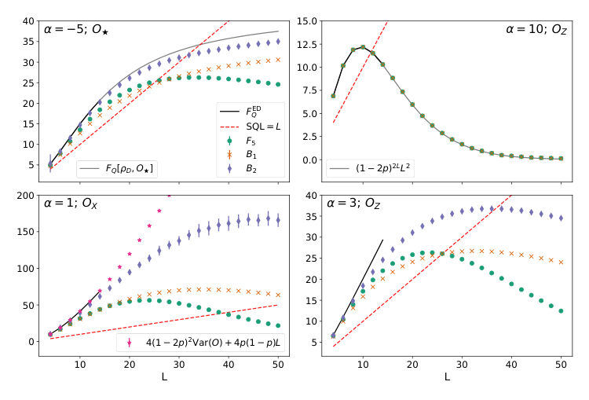
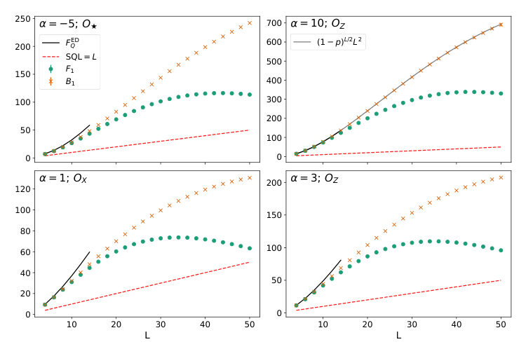
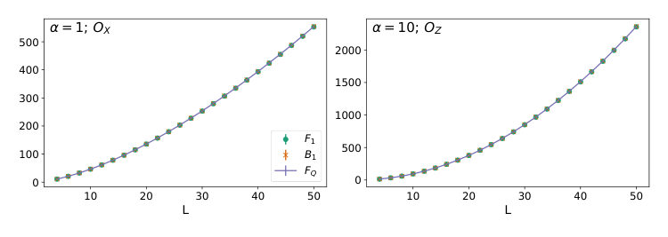
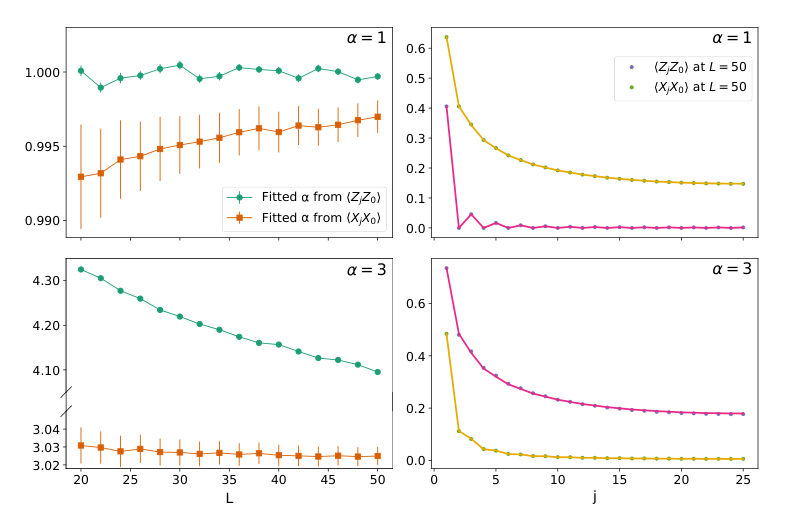
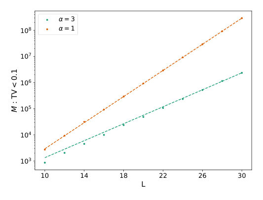
Summary. This paper introduces a Monte Carlo method to estimate the Quantum Fisher Information of many-body states subject to decoherence. By mapping QFI bounds to classical sampling, the authors enable the study of large-scale Jastrow-Gutzwiller states. The work characterizes how different noise channels affect the metrological scaling of these states across various physical regimes.
Why it may be interesting. It provides a scalable numerical framework for studying the metrological utility of many-body states under realistic noise, bridging the gap between pure-state theory and open-system many-body dynamics.
Main problem. Efficiently estimating the Quantum Fisher Information (QFI) for many-body quantum states in the presence of decoherence, where direct evaluation requires full spectral resolution of the density matrix.
Main result. The authors develop an MCMC-based method to estimate QFI lower bounds with a 'slow' exponential computational cost, demonstrating that Jastrow-Gutzwiller wave functions can achieve metrological advantages even under noise.
Method. Mapping QFI lower bounds to expectation values over a classical probability distribution, enabling efficient estimation via Markov-chain Monte Carlo (MCMC) sampling.
Model / system. Jastrow-Gutzwiller (JG) wave functions on a periodic chain of L sites, which interpolate between GHZ-like, Dicke-like, and critical (Luttinger liquid) regimes via a parameter alpha.
Key observables. Quantum Fisher Information (QFI), staggered magnetization (Oz), transverse magnetization (Ox), and correlation functions.
Important parameters / regimes. System size (L), interaction parameter (alpha), noise strength (p), and noise channels (local dephasing, local amplitude damping, and global depolarizing).
Assumptions / limitations. The method assumes the wave functions are known analytically in the occupation-number basis; computational cost still scales exponentially with system size.
Figures summary. Figures show the convergence of QFI bounds under depolarizing noise, correlation functions in the critical regime, and the exponential growth of required MCMC samples with system size.
Paper structure. Introduction to QFI and the problem of decoherence; presentation of the MCMC mapping for JG wave functions; analysis of metrological scaling in different alpha regimes; evaluation of various noise channels; discussion of bound accuracy and computational complexity.
We present a method to estimate the quantum Fisher information (QFI) of many-body quantum states in the presence of decoherence, where its direct evaluation requires the full spectral resolution of the density matrix. We show that, for many-body wave functions known analytically in the occupation-number basis, systematic lower bounds to the QFI can be mapped onto expectation values over a classical probability distribution defined by the wave function amplitudes. This mapping enables efficient estimation via Markov-chain Monte Carlo sampling, with a computational cost that scales as a `slow' exponential ($e^{b L}$ with $b \lesssim 0.6$) and remains manageable for system sizes well beyond exact diagonalization. We specify this framework to Jastrow-Gutzwiller wave functions. We characterize their metrological content by identifying the observables that maximize the QFI and the corresponding scaling with $L$. Then, we analyze the QFI under three physically motivated noise channels: local dephasing, local amplitude damping, and global depolarizing. We compare polynomial and Krylov-based lower bounds across these channels, relating their behavior to the effective rank of the noisy density matrix and to the structure of the operator generating the parameter encoding. The framework extends naturally to other analytically known wave functions and to a broader class of information-theoretic quantities beyond the QFI.
Authors: Xiao Wang, Alexander Yosifov, Aditya Iyer, Jinzhao Sun
Type: theory · Category: statistical mechanics · PDF: https://arxiv.org/pdf/2605.22947v1
Analysis basis: full PDF text, analyzed in chunks
Topic relevance: 🔥 entanglement & information structure 4/5 · 🔥 non-equilibrium dynamics 4/5 · Rydberg arrays 2/5 · analog quantum simulation 2/5 · non-equilibrium universality 2/5 · scars & prethermalization 2/5
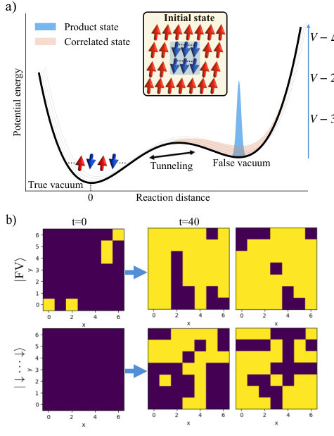
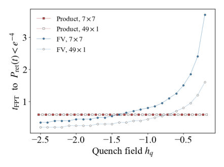
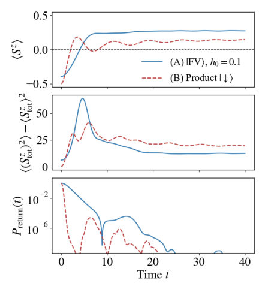
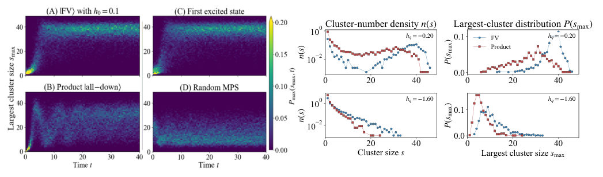
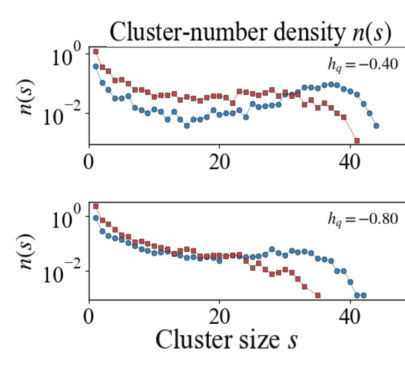
Summary. The study demonstrates that initial-state entanglement can prevent a quantum system from fragmenting into small, uncorrelated domains during a quench. By suppressing the nucleation of bubbles, specific pre-quench correlations stabilize large-scale connected structures, offering a way to protect global information without active error correction.
Why it may be interesting. It provides a novel perspective on 'passive protection' of information in many-body dynamics, showing that specific initial correlations can prevent fragmentation, which is highly relevant for the stability of states in programmable quantum simulators like Rydberg atom arrays.
Main problem. Investigating how initial-state entanglement and correlation structures can provide passive protection for global information and stabilize macroscopic connected clusters during the decay of metastable states in quantum many-body systems.
Main result. Initial-state entanglement suppresses the proliferation of true-vacuum bubbles and stabilizes system-size clusters in 2D, a mechanism that depends on specific pre-quench correlation structures rather than just entanglement entropy.
Method. Numerical simulations of real-time dynamics using Tensor Network methods, specifically Matrix Product States (MPS) with the Time-Dependent Variational Principle (TDVP) on a 2D lattice mapped to a 1D chain.
Model / system. A 2D Transverse-Field Longitudinal Ising Model (TFLIM) on an open square lattice, undergoing a quantum quench following an inversion of the longitudinal field to study false-vacuum decay.
Key observables. Average magnetization, return probability, Quantum Fisher Information (magnetization fluctuations), cluster-number densities, and largest-cluster distributions.
Important parameters / regimes. Lattice dimensionality (1D vs 2D), transverse field strength (g), longitudinal field (h), and surface tension (sigma).
Assumptions / limitations. The 2D lattice is mapped to a 1D chain using snake ordering; classical simulation limits are reached at 7x7 lattice sizes.
Figures summary. Fig 1 shows the energy landscape and spin snapshots comparing product vs. entangled states; Fig 2 shows real-time magnetization and QFI dynamics; Fig 3 compares dimensionality effects; Fig 4 and 5 show cluster size distributions and the impact of correlation structures.
Paper structure. The paper introduces the problem of information preservation, describes the 2D TFLIM model and the false-vacuum decay process, presents numerical results comparing different initial states and dimensions, and concludes with the implications for passive protection of global structures.
The capacity of a quantum many-body system to preserve global information -- encoded in the non-local correlations -- is a prerequisite for robust quantum computing. Unlike local degrees of freedom, large structures offer inherent resilience to noise, but their stability is often compromised by dynamical fragmentation and local excitations. In this work, we investigate under what initial conditions the quantum dynamics can sustain system-size cluster structures by examining false-vacuum decay dynamics in a 2D quantum Ising model. We find that while product states rapidly fragment into uncorrelated domains, initial-state entanglement suppresses the proliferation of true-vacuum bubbles and stabilises macroscopic connected clusters. We find that this passive stabilisation is not a mere consequence of entanglement entropy but rather depends on the specific pre-quench correlations. Our results establish a connection between initial-state preparation and the preservation of global structures, highlighting the role of entanglement for the passive protection of information in 2D quantum many-body simulation.
Authors: Gerardo Suárez, Baptiste Debecker, Francesco Cosco, Francesco Plastina, François Damanet, Nicola Lo Gullo, Francesco Perciavalle
Type: theory · Category: disordered systems and neural networks · PDF: https://arxiv.org/pdf/2605.22966v1
Analysis basis: full PDF text, analyzed in chunks
Topic relevance: 🔥 non-equilibrium dynamics 4/5 · driven-dissipative phase transition 3/5 · methods for driven-dissipative 3/5 · Keldysh / 2PI / non-Gaussian methods 2/5 · Kondo & dissipative impurity 2/5 · correlated / nonlocal dissipation 2/5
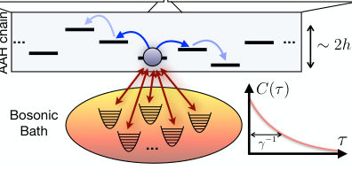
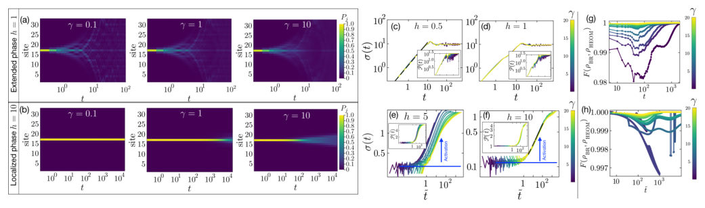
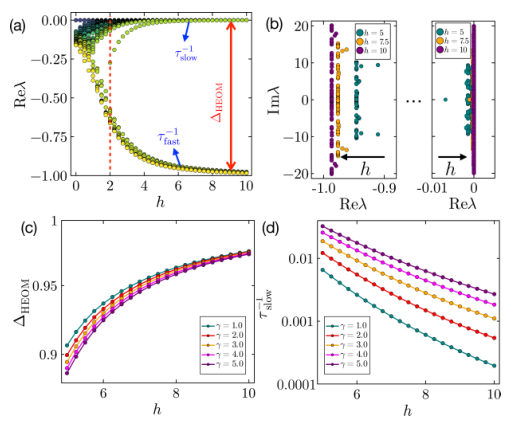
Summary. This paper explores how non-Markovian noise affects transport in the Aubry-André-Harper model. It demonstrates that while bath memory can fundamentally restructure transport in the delocalized phase, it only rescales the timing of transport in the localized phase. This identifies localization as a mechanism to filter out complex non-Markovian effects.
Why it may be interesting. This paper is highly relevant for researchers in open quantum systems and many-body dynamics as it reveals how environmental memory can be controlled or filtered by the underlying localization properties of a system, suggesting potential for bath engineering.
Main problem. The study investigates how non-Markovian dissipation and bath memory affect transport dynamics across the Aubry-André-Harper (AAH) localization transition.
Main result. The authors find that the localized phase acts as a filter: in the extended phase, bath memory qualitatively reshapes transport patterns, whereas in the localized phase, memory effects primarily act as a renormalization of dynamical timescales.
Method. The study employs the Hierarchical Equations of Motion (HEOM) to capture non-Markovian dynamics and compares the results with Markovian (Lindblad/Bloch-Redfield) and semiclassical master equation approaches.
Model / system. A single spinless fermion in a 1D quasiperiodic AAH chain coupled to a bosonic bath at a central site, where the bath is modeled with an exponentially decaying correlation function.
Key observables. Root-Mean-Square Displacement (RMSD), Population Participation Ratio (PPR), population dynamics, and the spectrum of the dynamical generator.
Important parameters / regimes. Disorder strength (h), coupling strength (kappa), dissipation rate (gamma), bath frequency (omega_0), and the localization-delocalization transition point (h_c = 2J).
Assumptions / limitations. The localized regime analysis assumes a deeply localized limit where eigenstates are approximately site-localized and uses a truncated hierarchy for HEOM.
Figures summary. Figure 1 shows the schematic setup and the qualitative difference in transport; Figure 2 displays population dynamics and RMSD/PPR scaling across the transition; Supplemental figures compare HEOM with semiclassical and Markovian methods and show spectral clustering.
Paper structure. The paper introduces the AAH model and non-Markovian setup, presents the numerical HEOM results for transport in both phases, provides a theoretical derivation of the semiclassical master equation for the localized regime, and concludes with a comparison of different dynamical generators.
We study transport across the Aubry-André-Harper localization transition in the presence of non-Markovian dissipation. For a single particle initially at the center of the chain, we show that bath memory (i.e., finite decay time of bath correlations) plays distinct roles in the two phases. In the extended phase, bath memory qualitatively reshapes the dynamical generator, thereby producing transport patterns that cannot be reduced to a simple rescaling of time. By contrast, in the localized phase, the bath activates motion between localized states and bath memory mainly renormalizes the dynamical timescales. Our results identify localization as a simple filter of non-Markovian effects: memory restructures transport in the extended regime, but survives mainly as a timescale renormalization in the deeply localized regime.
Authors: Xiangyu Cao
Type: theory · Category: statistical mechanics · PDF: https://arxiv.org/pdf/2605.23874v1
Analysis basis: full PDF text, analyzed in chunks
Topic relevance: 🔥 entanglement & information structure 4/5 · 🔥 non-equilibrium dynamics 4/5 · 🔥 scars & prethermalization 4/5 · non-equilibrium universality 3/5
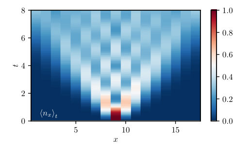
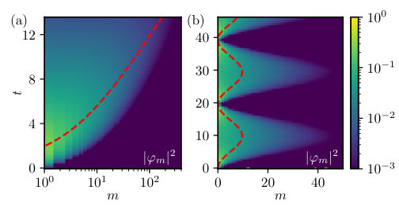
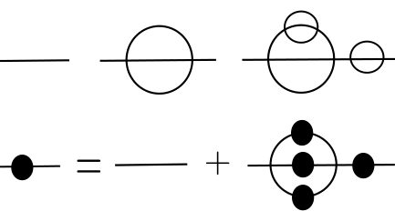
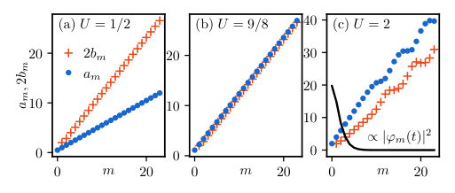
Summary. This paper proves that the growth of local operators in quantum systems is mathematically equivalent to the dynamics of specific local quenches in constrained models. It predicts a phase transition between localized and delocalized regimes in Krylov space and shows how these dynamics can lead to interesting transport phenomena.
Why it may be interesting. It provides a new theoretical framework for studying non-equilibrium many-body dynamics and identifies a way to use simplified growth quenches to model complex operator spreading and scrambling.
Main problem. Establishing a formal mathematical analogy between the dynamics of local operator growth in the Heisenberg picture and the evolution of growth quenches in kinetic constrained models.
Main result. The paper identifies a localization transition in Krylov and Fock space controlled by the ratio of Lanczos coefficients, and demonstrates that growth quenches can exhibit ballistic transport in physical space even when localized in Fock space.
Method. The study utilizes the Krylov (recursion) method, Lanczos algorithm, semiclassical analysis, and a mapping (dictionary) between operator dynamics and growth quench dynamics.
Model / system. The study focuses on kinetic constrained models (KCMs), specifically the 1D East-West model, and large-N solvable models inspired by the Sachdev-Ye-Kitaev (SYK) model.
Key observables. Lanczos coefficients (diagonal and off-diagonal), Lyapunov exponent, spread complexity, return amplitude, and total occupation number.
Important parameters / regimes. The localization threshold defined by the ratio |2alpha/nu|, where alpha and nu are the linear growth rates of the Lanczos coefficients.
Assumptions / limitations. The mapping is currently restricted to unitary dynamics and does not easily generalize to open quantum systems (Lindblad dynamics).
Figures summary. Figures illustrate the Motzkin path representation of moments, the spectral function of the Krylov chain, and the spacetime Green function showing ballistic spreading.
Paper structure. The paper begins by establishing a dictionary between operator growth and growth quenches, then moves to analyzing the localization transition using the Krylov method, explores large-N SYK-like models, and concludes with specific applications to the 1D East-West model.
We study growth quenches, which are local quenches that may gradually destabilize a false vacuum in certain kinetic constrained quantum lattice models, such as the East-West model. We point out a formal analogy with the dynamics of a local operator in the Heisenberg picture. Exploiting this analogy, we obtain several results on growth quenches by adapting operator-dynamics concepts and methods. First, applying the Krylov approach (recursion method), we conjecture the linear growth of Lanzcos coefficients in generic quenches, $a_m \sim νm$ (diagonal), and $b_m \sim αm$ (off-diagonal), extending an operator growth hypothesis. We show that the growth quench dynamics is localized in both Krylov and Fock spaces when $|ν| > 2 α$, and derive a bound for the growth quench analogue of Lyapunov exponent $λ_L \le \sqrt{4 α^2 - ν^2}$ when $|ν| < 2 α$. Second, we realize the Fock localization in large $N$ solvable growth quenches inspired by Sachdev-Ye-Kitaev (SYK) models. The bound on Lyapunov exponent is saturated in large-$q$ SYK grow quench. By contrast, the growth quench is almost always Fock localized in a nonrandom all-to-all growth quench amenable to semiclassics. Finally, in the 1D East-West model, we interpret Fock space cage states as the existence of a conserved charge. We show that the latter has ballistic transport due to current conservation. Moreover, adding hopping with a fine-tuned amplitude induces a partial localization due to a flat band. Our work suggest growth quenches as a promising approach to realize non-equilibrium coherent phenomena in many-body systems.
Authors: Frederick del Pozo, Tangi Morvan, Irénée Frérot, Nicolas Cherroret
Type: theory · Category: statistical mechanics · PDF: https://arxiv.org/pdf/2605.23600v1
Analysis basis: full PDF text, analyzed in chunks
Topic relevance: 🔥 entanglement & information structure 4/5 · 🔥 non-equilibrium dynamics 4/5 · driven-dissipative phase transition 3/5 · non-equilibrium universality 3/5
Summary. This paper demonstrates that the dynamical phase transition in the quantum O(N) model leaves unique signatures in the subleading terms of the entanglement entropy and the structure of the entanglement spectrum. It shows that while the leading term follows a volume law, the subextensive logarithmic corrections and the scaling of entanglement modes change significantly at the critical point. This provides a way to identify dynamical phase transitions using entanglement-based observables.
Why it may be interesting. It provides universal fingerprints of non-equilibrium phase transitions through entanglement signatures, which is highly relevant for understanding many-body dynamics and the emergence of long-range correlations.
Main problem. Investigating how a dynamical phase transition (DPT) in the quantum O(N) model manifests in the entanglement entropy and entanglement spectrum.
Main result. The DPT is revealed through subleading logarithmic corrections to the volume-law entanglement entropy and characteristic changes in the entanglement dispersion scaling (e.g., from q^1/2 to q^1/4).
Method. Analytical and numerical study in the large-N limit using a self-consistent Gaussian theory, the Williamson approach for entanglement spectrum, and an infinite-slab geometry.
Model / system. The quantum O(N) model in the large-N limit, specifically a system of O(N) bosons with quartic interactions in three spatial dimensions following a sudden mass quench.
Key observables. Entanglement entropy (EE), entanglement spectrum (ES), entanglement gap, and two-point correlation functions.
Important parameters / regimes. Quench depth (delta), dynamical exponent (alpha), subsystem size (L), and time (t).
Assumptions / limitations. The study relies on the large-N limit, which makes the dynamics integrable and solvable via Gaussian theory.
Figures summary. Figure 1 shows the quench phase diagram; Figure 3 illustrates light-cone spreading of EE; Figure 4 shows the entanglement gap scaling; Figure 6 shows data collapse for the inverse gap; Figure 9 displays the spatial structure of entanglement eigenvectors.
Paper structure. The paper introduces the model and quench protocol, establishes the numerical framework for entanglement calculation, analyzes the scaling of the entanglement spectrum and gap across the DPT, and concludes with the spatial structure of entanglement modes.
We demonstrate that the dynamical phase transition of the quantum $\mathcal{O}(N)$ model at large $N$ leaves universal fingerprints in the infrared structure of the entanglement spectrum. While the leading contribution to the entanglement entropy at long time follows the conventional volume law associated with ballistic entanglement spreading, its subleading behavior sharply distinguishes the different dynamical regimes. Specifically, quenches at and below the critical point generate gapless low-energy entanglement modes together with logarithmic corrections to the long-time entanglement entropy, whose scaling is governed by the dynamical exponent of the transition. Using an infinite-slab bipartition geometry and exact numerical correlation functions in the large-$N$ limit, we characterize these scaling laws across the dynamical phase diagram and relate them to the emergence of long-range correlations during the post-quench dynamics. We further show that the entanglement eigenmodes themselves reveal characteristic signatures of the dynamical phase transition through their spatio-temporal structure and degeneracy properties.
Authors: António Antunes, Junchen Rong
Type: both · Category: other · PDF: https://arxiv.org/pdf/2605.23848v1
Analysis basis: full PDF text, analyzed in chunks
Topic relevance: 🔥 Rydberg arrays 4/5 · analog quantum simulation 3/5 · exotic spin models in light-matter 3/5 · entanglement & information structure 2/5
Summary. This paper identifies a new type of conformal interface between two different universality classes, the Ising and Tricritical Ising models. It reveals that this interface possesses an emergent W3 chiral symmetry and proposes that these theoretical predictions can be tested using Rydberg atom arrays.
Why it may be interesting. It provides a concrete link between high-level algebraic structures (W3 symmetry) and controllable experimental platforms (Rydberg atoms), offering a way to study non-invertible symmetries and conformal interfaces in many-body systems.
Main problem. The discovery and characterization of a new conformal interface between the Ising and Tricritical Ising universality classes, and the investigation of its emergent W3 chiral symmetry.
Main result. The authors identify a new conformal interface that exhibits an emergent W3 chiral symmetry and demonstrate that this interface can be experimentally realized using Rydberg atom arrays.
Method. The study combines theoretical Conformal Field Theory (CFT) analysis, including modular bootstrap and symmetry gauging, with numerical simulations using Matrix Product States (MPS) and DMRG.
Model / system. The system consists of interfaces between critical spin-chains, specifically the Ising and Tricritical Ising models, with a potential experimental implementation in Rydberg atom arrays in a ladder geometry.
Key observables. Energy spectrum of the Hamiltonian, scaling dimensions of operators, partition functions (closed and open string channels), and boundary state amplitudes.
Important parameters / regimes. Interface coupling strength (hb), critical coupling ratios (K/J), and Rydberg atom parameters such as detuning (delta) and Rabi frequency (Omega).
Assumptions / limitations. The analysis assumes the validity of the W3 symmetry and uses the k=1 specialization for the Ising/TIM interface; it also assumes the accuracy of specific modular S-transformation matrices from existing literature.
Figures summary. Figure 1 illustrates the conformal interface; Figure 4 shows the open-string sector spectrum for mixed boundary conditions; Figure 5 shows the spectrum for the W3 invariant state; Figure 7 compares the interface spectrum with the KW-twisted sector.
Paper structure. The paper begins by introducing the new Ising/TIM interface, moves to the theoretical derivation of the W3 symmetry and boundary state construction, presents numerical validation via MPS/DMRG, and concludes with the proposed experimental realization in Rydberg arrays.
We consider interfaces between critical spin-chains in different universality classes, described in the continuum limit by defect/interface conformal field theory (DCFT/ICFT). We find a new conformal interface between the Tricritical Ising (TIM) and the Ising CFT. We also explore the possibility of its experimental realizations in the context of Rydberg atom arrays. Our analysis emphasizes non-invertible symmetries and consistency under modular transformations, and uses defect couplings and the defect spectrum -- including in the case of mixed boundary conditions -- to make sharp experimental predictions. The structure of the observables hinges on a newly discovered pattern of emergent ${W}_3$ chiral symmetry for the Tricritical-Ising/Ising interface.
Authors: Shivansh Singh, Shane Dooley
Type: theory · Category: quantum information and computing · PDF: https://arxiv.org/pdf/2605.23622v1
Analysis basis: full PDF text, analyzed in chunks
Topic relevance: 🔥 entanglement & information structure 4/5 · 🔥 non-equilibrium dynamics 4/5 · methods for driven-dissipative 2/5 · scars & prethermalization 2/5
Summary. This paper identifies that the ability to transfer information without loss through a quantum circuit depends on the presence of peripheral eigenvalues in the evolution channel. While dual-unitarity is required for simple qubit chains, larger subsystems or higher-dimensional qudits can achieve lossless transfer even in chaotic, thermalizing regimes.
Why it may be interesting. It provides a surprising link between the existence of non-dissipative information channels and quantum chaos, showing that thermalizing, non-integrable systems can still support perfect information transfer, which is highly relevant for quantum communication and remote sensing in many-body systems.
Main problem. Investigating the conditions for lossless versus lossy information transfer and remote sensing of parameters along the causal lightcone of a brickwork quantum circuit.
Main result. Lossless information transfer is linked to the existence of peripheral eigenvalues (unit modulus) in the quantum channel, a requirement that is necessary for qubits (M=1) but can be relaxed for larger subsystems or higher-dimensional qudits, even in chaotic, thermalizing systems.
Method. The authors use a quantum channel framework ($\Phi_M$) to map many-body dynamics to the lightcone, employing spectral analysis of the channel, numerical optimization, and analytical constructions using the Poincaré recurrence theorem and Weyl's inequality.
Model / system. A one-dimensional open chain of $N$ qudits (qubits or qutrits) undergoing Floquet dynamics driven by a brickwork quantum circuit of alternating unitary layers.
Key observables. Trace distance (distinguishability), Quantum Fisher Information (QFI), information transfer ratios ($\eta_D, \eta_F$), and operator linear entropy.
Important parameters / regimes. Subsystem size $M$, local dimension $d$, non-local gate parameters ($J_x, J_y, J_z$), and the presence of peripheral eigenvalues ($|z|=1$).
Assumptions / limitations. The system is assumed to be in a high-temperature/maximally mixed state outside the encoded subsystem, and the dynamics are restricted to the brickwork circuit class.
Figures summary. Schematics of information encoding/recovery; plots of eigenvalue spectra and information decay rates; numerical optimization of gate parameters; and entanglement entropy analysis showing an absence of many-body scars.
Paper structure. The paper introduces the problem of information propagation, defines the brickwork circuit and quantum channel framework, analyzes the spectral conditions for information loss/preservation, extends the findings to larger subsystems and higher dimensions, and concludes by demonstrating that these lossless properties can coexist with quantum chaos and ETH.
Understanding how local information propagates through many-body quantum systems is a central problem in nonequilibrium dynamics, with important implications for quantum communication, state transfer, and remote sensing. In this work, we investigate information transfer along a one-dimensional open chain of qudits, focusing on the task of recovering information initially encoded at one end via measurements performed at the opposite end. By restricting the dynamics to brickwork quantum circuits, and considering small $M$-qudit subsystems on the causal ``lightcone'' of the circuit, we obtain several results valid even for large system sizes $N$ or for nonintegrable global dynamics. Within this framework, lossless information transfer is linked to the existence of peripheral eigenvalues of a quantum channel $Φ_M$, which governs the evolution of the $M$-qudit local subsystem along the lightcone. We investigate conditions under which brickwork circuits admit such peripheral eigenvalues. For qubit chains and $M=1$, we show that the dual-unitary property is necessary, whereas for larger local subsystems ($M \geq 2$) or higher-dimensional qudits, this requirement can be relaxed. Perhaps surprisingly, we can use the peripheral eigenvalue condition to construct examples exhibiting lossless information transfer through chains of arbitrary system size $N$, even when the underlying circuit dynamics is nonintegrable and thermalising at long times.
Authors: Jesse J. Osborne, Cheuk Yiu Wong, Jad C. Halimeh
Type: theory · Category: statistical mechanics · PDF: https://arxiv.org/pdf/2605.22915v1
Analysis basis: full PDF text, analyzed in chunks
Topic relevance: 🔥 non-equilibrium dynamics 4/5 · driven-dissipative phase transition 3/5 · non-equilibrium universality 3/5 · entanglement & information structure 2/5
Summary. This paper introduces a new framework to unify different types of dynamical quantum phase transitions by focusing on energy resonances between state manifolds. By studying a 1+1D lattice gauge theory, the authors show that the nature of these transitions depends on the multiplicity and symmetry of transitional states. This provides a way to use DQPTs as probes for the resonant connectivity of constrained quantum systems.
Why it may be interesting. It provides a fundamental mechanism for classifying non-equilibrium phase transitions based on energy structure and connectivity, which is highly relevant for understanding many-body dynamics and out-of-equilibrium criticality.
Main problem. The lack of a comprehensive understanding of why different types of dynamical quantum phase transitions (DQPTs), such as regular vs. anomalous and manifold vs. branch, occur in specific many-body scenarios.
Main result. The authors propose a unified resonant-manifold framework where manifold DQPTs are driven by resonances within the initial state manifold, while branch DQPTs are driven by resonances with a transitional manifold of states.
Method. The study uses infinite Matrix Product State (iMPS) simulations with the Time-Dependent Variational Principle (TDVP) and spectral analysis of energy resonances.
Model / system. A 1+1D Z2 Lattice Gauge Theory (LGT) featuring dynamical matter fields, including terms for particle hopping (J), staggered fermion mass (mu), and external electric field strength (h).
Key observables. Fidelity (return rate to the initial state), electric flux, and particle number difference.
Important parameters / regimes. Fermionic mass (mu), electric field strength (h), hopping strength (J), and a bias term (delta).
Assumptions / limitations. The study focuses on the mass-resonance regime and assumes the dynamics can be captured by the connectivity of product-state manifolds in a constrained Hilbert space.
Figures summary. Figure 1 maps the parameter space of the Z2 LGT; Figure 4 shows the evolution of return rates and local observables for different electric field strengths; Figure 8 displays quench dynamics for fully polarized and staggered-link states.
Paper structure. The paper introduces the problem of DQPT classification, proposes the resonant-manifold framework, applies it to the Z2 LGT model, analyzes specific regimes (mass-resonance, large-h, and U(1) limit), and discusses the implications for understanding resonant connectivity.
Dynamical quantum phase transitions (DQPTs) are an exciting paradigm of out-of-equilibrium criticality in many-body systems manifested in nonanalytic behavior in the return rate to the initial state following a sudden quench. While previous work has tried to distinguish between distinct types of DQPTs, such as regular and anomalous, or manifold and branch, a comprehensive understanding of why each type appears in a given scenario is still lacking. In this work, we propose a unified framework addressing this gap in terms of the energy structure of different product state configurations. In particular, while manifold DQPTs are governed by resonances within the initial state manifold, branch DQPTs are governed by resonances with a transitional manifold of states dynamically connected to the initial manifold by low-order processes. We show that the (ir)regularity of branch DQPTs is related to the multiplicity of this transitional manifold, and we also observe exotic periods of extended degeneracy in the return rate (beyond the conventional level crossing of a DQPT) which are also conditioned on the structure of this transitional manifold. We demonstrate this by studying quenches of two different configurations in the 1 + 1D Z_2 LGT to various parameter regimes. Our findings provide a dynamical mechanism underlying branch DQPTs and frames DQPTs as probes of resonant connectivity in constrained Hilbert spaces, paving the way to a more complete understanding of the multifaceted nature of dynamical criticality.
Authors: Zhilong Liu, Zehua Tian, Jieci Wang
Type: theory · Category: quantum information and computing · PDF: https://arxiv.org/pdf/2605.23197v1
Analysis basis: full PDF text, analyzed in chunks
Topic relevance: 🔥 entanglement & information structure 4/5 · correlated / nonlocal dissipation 2/5 · methods for driven-dissipative 2/5 · non-equilibrium dynamics 2/5
Summary. This paper discovers a quantum version of the Mpemba effect where higher initial entanglement leads to faster entanglement sudden death. It provides an analytical framework to understand this anomalous decay and proves that the effect's existence is robust even when the dissipation rates of the two qubits are unequal.
Why it may be interesting. It provides new insights into the control of quantum resource lifetimes in dissipative environments and shows how environmental asymmetry affects the dynamics of entanglement decay.
Main problem. The paper investigates the 'Entanglement Sudden Death (ESD) Mpemba Effect,' where a more strongly entangled initial state decays to a separable state faster than a more weakly entangled one.
Main result. The authors analytically derive the conditions for trajectory crossing and demonstrate that the boundaries of this anomalous Mpemba region are robust against environmental dissipation asymmetry.
Method. The study uses an analytical approach involving the Lindblad master equation, exact derivation of density matrix elements for X-states, and phase diagram mapping.
Model / system. Two independent two-level subsystems (qubits) interacting with local, zero-temperature bosonic reservoirs via pure amplitude damping (spontaneous emission) described by a Lindblad master equation.
Key observables. Concurrence (as a measure of entanglement), ESD time (tau*ESD), and crossing time (tau_cross).
Important parameters / regimes. Decay rates (Gamma_A, Gamma_B), initial state parameters (w(0), d(0)), and the dissipation asymmetry ratio (Gamma_B/Gamma_A).
Assumptions / limitations. Born-Markov and rotating-wave approximations are used; the environment is at zero temperature; the initial states are restricted to a specific class of X-states.
Figures summary. Fig 1 shows the dissipative model; Fig 2 compares normal decay vs. Mpemba crossing; Fig 3 shows the impact of asymmetric dissipation; Fig 5 plots characteristic timescales and their ratios as functions of the dissipation ratio.
Paper structure. The paper introduces the Mpemba effect analogy, defines the two-qubit dissipative model, provides analytical derivations for ESD and crossing times, analyzes the impact of dissipation asymmetry, and concludes with a phase diagram of the effect's boundaries.
In classical thermodynamics, the Mpemba effect refers to the counterintuitive observation that hot water can freeze faster than cold water, manifesting as an anomalous crossing of dynamical trajectories. While analogues of this phenomenon have been explored in quantum radiative systems and spin-chain entanglement asymmetry, its connection to the finite-time decoupling of quantum correlations remains elusive. In this Letter, we uncover a distinct quantum Mpemba effect associated with entanglement sudden death (ESD). By analyzing two qubits interacting with local amplitude damping reservoirs, we demonstrate that a more strongly entangled initial state can experience a faster collapse into a separable state than a more weakly entangled one. We provide an exact analytical derivation of the trajectory crossover dynamics and the ESD time. Finally, we map the phase diagram of initial state parameters to delineate the regime where this anomalous entanglement Mpemba effect occurs, offering insights into the control of quantum resource lifetimes in dissipative environments.
Authors: Masao Hirokawa
Type: theory · Category: other · PDF: https://arxiv.org/pdf/2605.23413v1
Analysis basis: full PDF text, analyzed in chunks
Topic relevance: 🔥 analog quantum simulation 4/5 · correlated cavity matter 3/5 · exotic spin models in light-matter 2/5
Summary. This paper shows that the Quantum Rabi Model can be used to simulate macroscopic quantum tunneling and the restoration of Z2-symmetry. By mapping the model to a double-well potential, the author demonstrates how instanton-like effects drive energy bifurcation. This provides a potential experimental route to probe non-perturbative physics using quantum simulators.
Why it may be interesting. It provides a concrete bridge between light-matter interaction models (QRM) and fundamental non-perturbative phenomena like instantons and supersymmetry, offering a platform for simulating gauge theory-like physics in cavity QED.
Main problem. The paper addresses the difficulty of experimentally verifying Macroscopic Quantum Tunneling (MQT) and its connection to instanton physics and Polyakov's energy bifurcation.
Main result. The author demonstrates that the Quantum Rabi Model (QRM) can serve as a quantum simulator for instanton-like effects, showing that tunneling restores Z2-symmetry and lifts ground-state degeneracy.
Method. The study uses unitary transformations to map the QRM onto an effective double-well potential and employs semiclassical approximations and Euclidean action calculations.
Model / system. The primary model is the Quantum Rabi Model (QRM), consisting of a two-level system (qubit) interacting with a single-mode boson (oscillator) with parity symmetry.
Key observables. Energy level splitting (E1 - E0), energy gap, and the classical Euclidean action of an effective instanton-like particle.
Important parameters / regimes. Qubit transition frequency (wa), boson frequency (wc), coupling strength (g), and the strong-coupling limit (g -> infinity).
Assumptions / limitations. The quantum motion in each potential well is assumed to be semiclassical, and the potential near minima is approximated as a harmonic oscillator.
Figures summary. Figure 1 illustrates symmetry breaking and restoration via instantons; Figure 2 shows the double-well potential; Figures 5 and 8 demonstrate the rapid decay of tunneling in specific mathematical limits.
Paper structure. The paper begins by establishing the MQT/double-well analogy, introduces a transformed QRM to reveal tunneling behavior, analyzes symmetry breaking/restoration via energy bifurcation, and concludes by discussing the implications for simulating complex field theories.
Macroscopic quantum tunneling (MQT), a cornerstone of Leggett's program, is deeply linked with instanton physics, yet its experimental verification remains elusive. This Perspective demonstrates that the quantum Rabi model manifests observable, instanton-like effects via quantum simulation. In the MQT regime, qubit-boson interactions drive Polyakov's energy bifurcation, governing tunneling and spontaneous symmetry breaking. Mapping the quantum Rabi model onto an effective double-well potential reveals that while tunneling suppression induces spontaneous symmetry breaking, instanton-like contributions act to restore it. This mechanism enables experimental access to the classical Euclidean action of an effective instanton-like particle, offering a route to probe non-perturbative phenomena.
Authors: Jacob S. Nelson, Andrew B. Baczewski
Type: theory · Category: quantum information and computing · PDF: https://arxiv.org/pdf/2605.22920v1
Analysis basis: full PDF text, analyzed in chunks
Topic relevance: 🔥 Kondo & dissipative impurity 4/5 · methods for driven-dissipative 2/5 · non-equilibrium dynamics 2/5
Summary. The paper introduces the Robust Quantum Arnoldi Method (ROQAM), a new quantum algorithm for computing Green's functions over entire frequency intervals. By using the time-evolution operator and orthogonal polynomials, the method achieves significant reductions in computational cost compared to existing techniques like QSVT. It is particularly effective for studying the spectral properties of strongly correlated models like the Anderson impurity model at both zero and finite temperatures.
Why it may be interesting. This is highly relevant for many-body dynamics as it provides a scalable quantum algorithm for computing spectral properties and Green's functions, which are fundamental to understanding the dynamics of correlated electron systems and open quantum systems.
Main problem. Efficiently estimating single-particle Green's functions over intervals or multiple points on a quantum computer while overcoming the exponential growth of subnormalization factors and sensitivity to finite-precision errors.
Main result. The proposed Robust Quantum Arnoldi Method (ROQAM) provides a functional representation of Green's functions and outperforms Quantum Singular Value Transformation (QSVT) by multiple orders of magnitude in T-gate count for small-scale systems.
Method. A quantum adaptation of the Arnoldi method using orthogonal polynomials and the time-evolution operator U(dt) instead of the Hamiltonian directly to preserve the upper-Hessenberg structure and avoid subnormalization scaling.
Model / system. The method is demonstrated using the Single-Impurity Anderson Model (SIAM) in both zero-temperature (ground state) and non-zero temperature (Thermofield Double state) regimes.
Key observables. Single-particle Green's functions G(omega), spectral functions A(omega), and energy eigenvalues.
Important parameters / regimes. Krylov subspace dimension (r), time-step (dt), broadening parameter (gamma), subnormalization factor (lambda), and estimation precision (delta).
Assumptions / limitations. Assumes efficient access to a block-encoding of the Hamiltonian and that the initial state preparation is possible; neglects identity terms in the Jordan-Wigner transformation.
Figures summary. Figure 1 shows the ROQAM process schematic; Figure 2 displays spectral function estimates and error vs. iteration depth; Figure 3 compares T-gate counts between ROQAM and QSVT; Figure 4-7 show spectral function convergence and error behavior across different parameters; Figure 10-11 illustrate error scaling with subnormalization and error budget strategies.
Paper structure. The paper introduces the ROQAM algorithm, details the mathematical framework using orthogonal polynomials and unitary evolution, extends the method to finite temperatures via the TFD formalism, provides numerical validation using the SIAM, and concludes with resource estimation and error budget analysis.
Many applications of Green's functions (GFs) require their evaluation over intervals or at multiple points, motivating quantum algorithms that return an efficiently computable functional representation rather than mere point estimates. We introduce a robust quantum Arnoldi method (ROQAM) that achieves this goal. Its robustness is derived from formulation in terms of orthogonal polynomials, which preserves the upper-Hessenberg structure of the projected matrices despite finite-precision estimation. We also show that as the iteration depth increases, the precision required for matrix-element estimation can be reduced. Resource estimates for the spectral function of a quantum impurity model indicate that ROQAM outperforms pointwise estimation via quantum singular value transformation by multiple orders of magnitude. Finally, we show that the ROQAM can be used to estimate GFs at nonzero temperatures using only a single Krylov subspace.